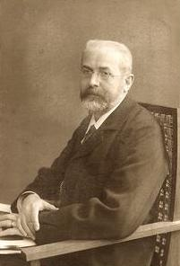

1849–1917
German
Algebra, group theory, linear algebra
Ferdinand Georg Frobenius was born in Berlin and studied at the University of Göttingen under Weierstrass. He held positions in Berlin and Zurich before returning to Berlin in 1892 as Kronecker's successor, where he remained for the rest of his career. He was a dominant figure in German algebra for three decades.
Frobenius made contributions across an extraordinary range of algebraic topics. In 1878 he gave the first rigorous proof of the Cayley–Hamilton theorem (that every matrix satisfies its own characteristic polynomial), improving on the earlier partial arguments of Cayley and Hamilton. He extended the Sylow theorems from permutation groups to abstract groups, helping to establish the modern axiomatic approach to group theory.
Together with Ludwig Stickelberger, Frobenius proved the classification theorem for finitely generated abelian groups in 1879, showing that every such group decomposes uniquely as a direct sum of cyclic groups. This result, which Kronecker had also approached via Smith normal form, remains one of the most-used structural theorems in algebra.
Frobenius's most original creation was the character theory of finite groups, developed in a series of papers from 1896 onwards. Group characters — traces of representation matrices — encode the structure of a group in a remarkably compact way and have applications throughout mathematics and physics. The Perron–Frobenius theorem, on the dominant eigenvalue of positive matrices, is equally celebrated in applied mathematics, finding use in Markov chains, population dynamics, and Google's PageRank algorithm.
Frobenius died in Berlin in 1917. His algebraic legacy is visible throughout this course, from linear algebra through group theory to spectral theory.
| Phase | Page | Referenced for |
|---|---|---|
| Phase 6 | The Cayley–Hamilton Theorem | First rigorous proof (1878) |
| Phase 6 | Jordan Normal Form | Unified Jordan and Weierstrass approaches to canonical forms |
| Phase 10 | Cayley's Theorem and the Sylow Theorems | Extended Sylow theorems to abstract groups |
| Phase 10 | Classification of Finitely Generated Abelian Groups | Classification theorem with Stickelberger (1879) |
| Phase 10 | Galois Theory and Abel-Ruffini | Frobenius group $F_{20}$ as Galois group |
| Phase 13 | Singular Value Decomposition | Frobenius norm: $\|M\|_F = \sqrt{\sum \sigma_i^2}$ |